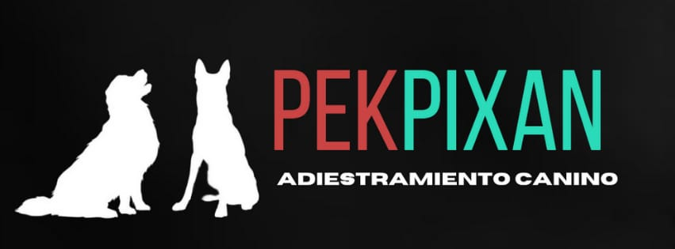

ADIESTRAMIENTO CANINO
ADIESTRAMIENTO:
Corrección de malos hábitos
Socialización
Básico 1 y 2
Avanzado 1 y 2
Guardia y Proteccón
Internado por clase
TAMBIEN CONTAMOS CON :
Pensión
Baño y grooming
Básico 1 y 2
Transporte
Guarderia